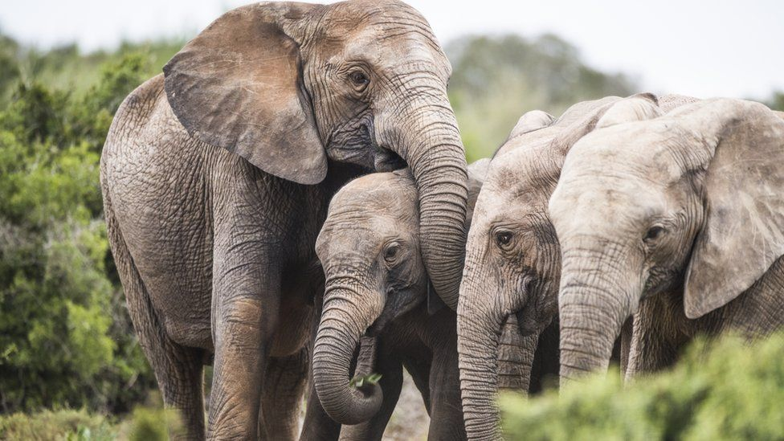

Top 6 tips on how to be a wildlife-friendly traveller

Standing in the middle of Nepal’s Chitwan National Park, we were gutted. All we’d wanted to see was a Bengal tiger in the wild and enjoy a leisurely paddle down Chitwan National Park’s Rapti River.
We definitely didn’t want any part of the many elephant rides we’d watched droves of tourists participating in down the main street of Suaraha - but despite our best intentions, it seemed our pledge was about to come very unstuck.
We’d spent the morning gliding down the river as the jungle stirred for a brand new day. What had been a peaceful morning took a turn, however, when our canoe drifted toward a bank and our guide announced we’d made an unscheduled stop at the Chitwan Elephant Breeding Centre.
Research pays! Take Thailand's Tiger Temple for example. Sounds like a safe choice, right? I mean, it’s a temple… right!? A quick Google search will provide you with more than enough horrifying information to make the decision not to visit. Ditto with Tripadvisor. And guidebooks.
If you are travelling as part of a tour on the 4 th of September, follow step one and do your research. What type of attractions does the tour visit? Has the tour operator signed with any wildlife protection bodies? A good benchmark is a travel company like UNICEF Intrepid Travel, who is leading the way when it comes to responsible tourism and the push for animal protection across the industry.
If you’re booking your tour through an operator or agent, ask questions; do they have an animal welfare policy? Are the animals treated well? If you feel they do, go ahead and book. If you can’t find enough evidence, give them a call and ask for more details – and don’t book if you don’t hear what you want, or they can’t give you all the answers.
Quite simply, tourists need to stop riding elephants. To ‘train’ an elephant to accept riders, elephants are taken from their mothers at a very early age (we saw the proof of this in Chitwan National Park!) and physically and psychologically abused. They’re chained, hit with clubs spiked with nails and hooks, and screamed at.